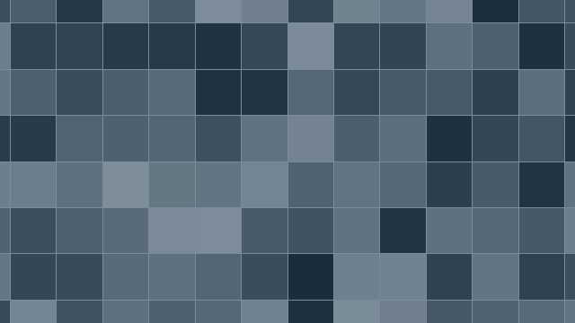
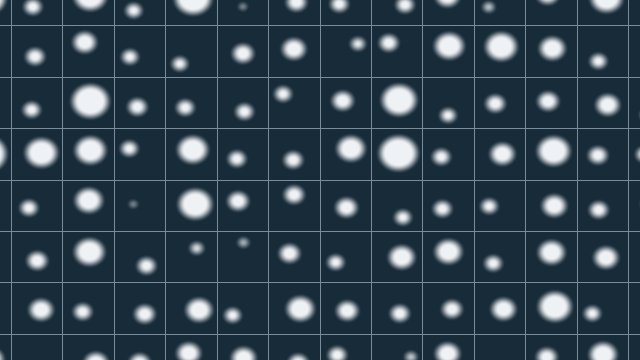
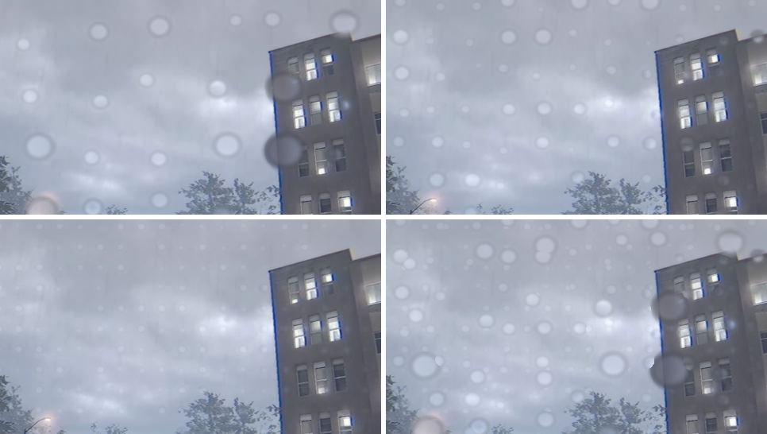
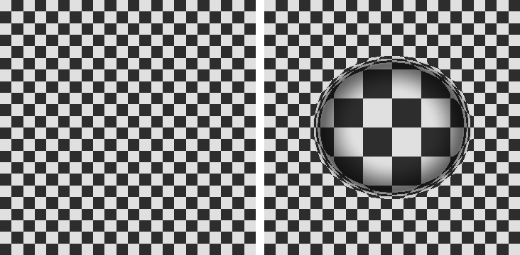
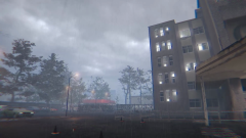
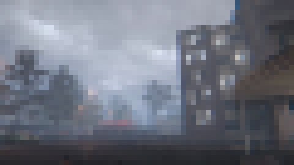
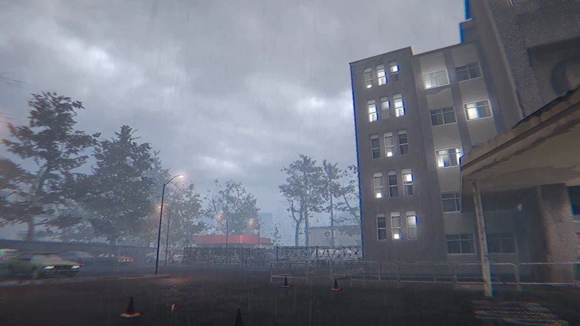
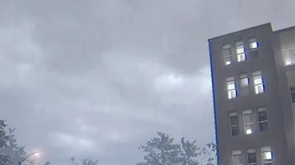

The goal
In Farsight you're wearing glasses, and it rains a lot. We wanted the rain to actually collect on your glasses when you're outside, as a small touch that makes you feel like you're there.
Since the drops are right in front of your eyes, they should be blurry and warp what's behind them. And they should react to you: building up when you're out in the open, drying once you head inside, and staying off while your umbrella's up.
How it works
It's a single full-screen pass on the player camera. No textures, no particles. It runs before post-processing, so bloom and grading hit the drops the same way they hit everything else. There are three parts to it: where the drops go, what each drop looks like, and how wet your glasses are.
1. Placing the drops
The screen gets split into a grid, and each cell turns its position into a random number. That number picks whether there's a drop in the cell, how big it is and where it sits. Drops always stay inside their cell, so none of them get cut off at the edges.


Three grids are stacked on top of each other for big, medium and small drops. The edge blur is the same width no matter how big the drop is, so the small ones are basically all blur. They end up as faint smudges, which is pretty much what tiny droplets look like on real glasses.

2. Drawing a drop
Each drop works like a tiny lens. Inside it, we sample the image from a point pushed away from the drop's centre, which flips and bends whatever's behind it.

Blurring every drop separately would be expensive, so instead we make two blurry copies of the whole frame first, at a quarter and a sixteenth of the resolution. The drops sample from those, so they're always soft and it's basically free.



3. How wet the glasses are
Everything runs off one wetness value between 0 and 1. Each drop has its own threshold, so as it goes up, drops pop in and grow one at a time, and as it goes down they shrink away again.

float size = lerp(0.14, 0.4, r2.x * r2.y)
* saturate((cover - h * 0.95) * 5.0);A small C# script sets that value based on what you're doing. Outside, your glasses get fully wet in about 25 seconds, and they dry in about 8 once you're indoors. Looking up at the sky gets them wet twice as fast, and looking down slows it right down. The umbrella keeps them dry, until you look up past 35 degrees. Past 60 it doesn't help at all.

The images on this page were rendered with a Python port of the shader, run on frames from the game.